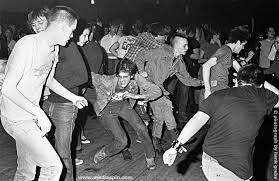

Ela olha dentro dos seus olhos e simplesmente fala:
- "Agora vamos curtir a noite! eu te falo no caminho". Para sua surpresa, ela deseja ir exatamente no lugar que você não queria levá-la.
È um antigo casarão, de dois pisos, todo pintado de preto, na entrada uma galera de adolecentes vestido de preto com correntes amarradas na cintura e cabelos espetados, fumando e bebendo como loucos.
O som das batidas rápidas do hardcore ao vivo que vem de dentro do casarão, agita os punks que estão na rua, fazendo-os criar uma roda-punk parecendo que estão mais brigando que dançando.

Você sempre se sentiu confortável nesse lugar, e é onde você mais gosta de curtir, porém, nesse momento parece um lugar estranho.
Isso por que a Olívia parece fora daquele contexto, mas mesmo assim você percebe que ela também está curtindo muito.
Dentro do casarão a banda punk tocando, o mosh pegando e Olívia pulando e balançando a cabeça curtindo muito a festa com uma garrafa de vinho na mão. Apesar de não conhece-la tão bem, você começa a curtir esse lado obscuro dela, assim você também se solta mais.
Voces dois fumam maconha e bebem muito a noite toda, aproveitam para estreitar o relacionamento se beijando e agarrando como se fossem namorados.
Derrepente, em meio aquela galera pulando, gritando sob o som das guitarras e batidas rápidas da bateria, a fumaça no ar e o cheiro de alcool, Olívia olha para o relógio no qual já bate 02:32. Como quem lembra que tem algum compromisso, Olívia rapidamente toma consciência e pede para você levá-la pra casa rapidamente. Estranhando novamente o comportamento dela, você chapado como está simplesmente pergunta o que aconteceu? Sem falar nada ela pega na sua mão e andando em passos rápidos vai saindo do casarão.
Ela faz você acelerar o maverik para que possa chegar antes das 03:00 em casa, então voçê começa a perguntar por que a pressa e logo agora que estava ficando bom. Ela parecendo nervosa apenas fala pra ir mais rápido sem fazer perguntas, porém, um pequeno detalhe: você está chapado. Sempre que você vai até o casarão saí de la chapado e dirige de boa até em casa, mas é a primeira vez que tem que dirigir sob pressão. E por essa razão por um pequeno deslize na estrada correndo a 110 km/h o maverikão derrapou e girou na estrada ficando por alguns segundos em apenas duas rodas e parando somente quando bateu de lado em uma árvore.
Você abre os olhos devagar, e enxerga tudo embaçado, tonto com a cabeça doendo aos poucos vai recuperando a consciência. Levantando a cabeça você repara no vidro dianteiro trincado a fumaça saindo da frente do capô se misturando com a baixa neblina da madrugada. Quando você se da conta que a Olívia não está no carro e que a porta do carona está aberta. Ainda meio tonto você se esforça para sair do carro pelo lado do carona, visto que sua porta esta trancada por causa da batida na árvore.
Caminhando em volta do carro procurando a Olívia, você percebe que entrou uns 6 km mata a dentro. E começa a vagar pelo mato enxergando mal por causa da forte neblina, da escuridão da mata e pelo sangue saindo da testa e escorrendo pelos olhos. Gritando pela Olívia você caminha mais alguns metros mata a dentro e tropeça em algo e cai no chão. Através do tato e do olfato você percebe que tropeçou em algum animal morto. Nesse momento lhe passa um pensamento muito ruim, pois como não está enxergando naquela escuridão, não tem certeza se é um animal morto ou o corpo da Olívia.
Você prefere voltar para a estrada e procurar ajuda, ou continuar procurando pela Olívia mata a dentro?